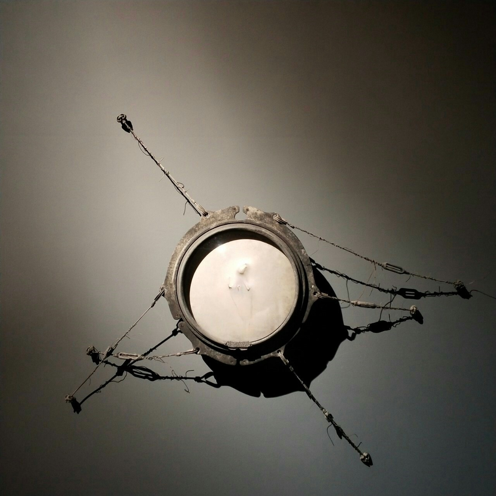

「戲劇」
觀賞戲劇的過程，就是真切地把握「美」的要義的過程。我們不必要求每一位同 學都有同樣的或者同步的得著，我們畢竟不是要在這個過程中培養小演員或者小評論 家（雖然，這也是好事）。我們更要著重的，是希望同學保有對「美」的感情與觸 覺，並且勇於表達自己，懂得反省自己。
戲劇表演 |
|||
| 戲劇名稱 | 活動時間 | 活動地點 | 表演者 |
| 《臺灣也有自己的馬戲團》 | 03/06 18:30 | 活動中心音樂廳 | 福爾摩沙馬戲團FOCA |
| 《家》 | 03/11 18:30 | 活動中心音樂廳 | 三合院劇社 |
| 《英雄武松》 | 03/28 18:30 | 活動中心音樂廳 | 興傳奇青年劇場 |
| 《尋人啟事樂團校園巡迴》 | 04/25 18:30 | 活動中心音樂廳 | 尋人啟事樂團 |
| 《吳門20─師出吳名》 | 04/30 18:30 | 中正樓 | 吳兆南相聲劇藝社 |
| 《藍衫之下》讀劇 | 05/14 18:30 | 活動中心音樂廳 | 陳家聲工作室 |
| 《走在夢想的路上》 | 05/16 18:30 | 活動中心音樂廳 | 丞舞製作團隊 |
| 《青春絮語》 | 05/20 18:30 | 活動中心音樂廳 | 玉米雞青少年劇團 |
展開